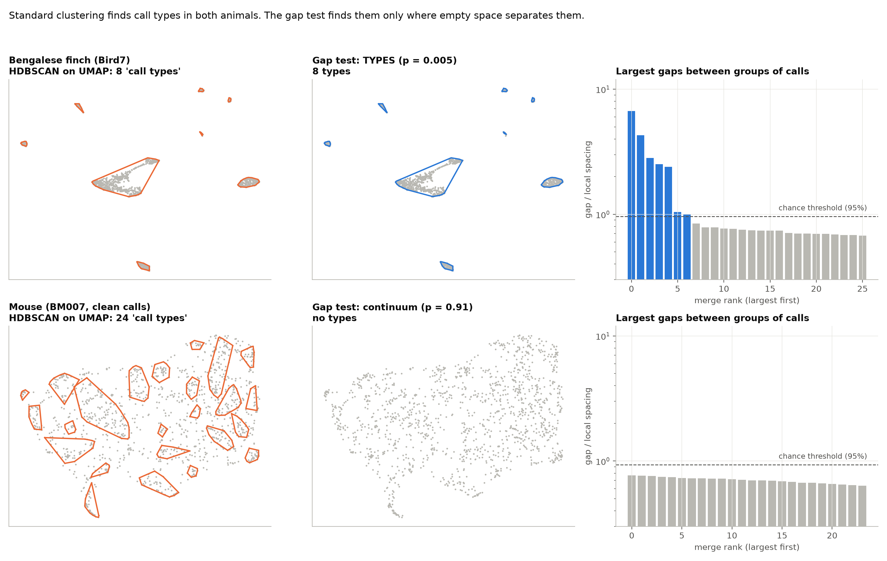
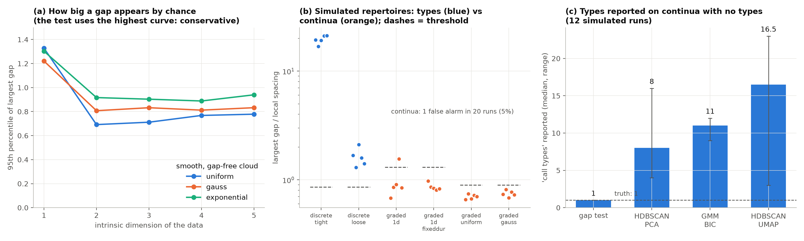
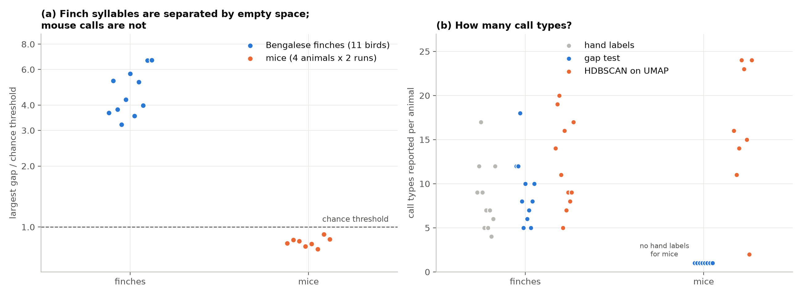

isthmus · topological data analysis for bioacoustics
Check for types before you cluster
Standard clustering tools find 7–20 "call types" in simulated repertoires that have none. isthmus is a calibrated test that asks a simpler question first: is there empty space between kinds of calls at all?

Figure 1. Same pipeline, two animals. Left: HDBSCAN on a UMAP embedding (the approach popularized by Sainburg et al. 2020) outlines call types in both. Middle: the gap test finds 8 types for the finch and none for the mouse. Right: why. The finch's largest gaps between groups of syllables are 3–7× larger than smooth data produces by chance; every gap between mouse calls is smaller than chance.
The question
Do an animal's calls come in discrete types, like the syllables of a songbird, or do they vary along a continuum? The answer shapes almost everything downstream. Counting a "repertoire size", modelling call sequences, or asking what a call type means all assume the types exist.
The common shortcut is to project spectrograms with UMAP and cluster the result, or to score clusterability with the Hopkins statistic on the UMAP embedding. Both have a problem: UMAP is built to pull neighbourhoods apart, and it distorts high-dimensional data in ways that can create clusters (Chari & Pachter 2023). In our simulations, Hopkins-on-UMAP gave a smooth one-dimensional continuum a score of 0.000, maximally "clustered", the same score it gave real finch syllables. It cannot tell the two apart.
Goffinet et al. (2021) made the key observation: if calls form distinct types, there should be no smooth chain of calls connecting different types. They showed this qualitatively for mouse calls. isthmus turns that idea into a test with a measured false-alarm rate.
The method
Each call becomes a point (here, a 32×32 spectrogram reduced to 10 principal components). Building a minimum spanning tree over the points (0-dimensional persistent homology) shows every place where two groups of calls first join, and how far apart they were. Each gap is divided by how tightly packed the calls are at that spot, so a sparse stretch of a continuum is not mistaken for a gap.
The largest gap is then compared with the largest gaps in thousands of smooth, gap-free clouds of the same size and the same intrinsic dimension, in three different shapes. The test uses whichever shape is most lenient. The output is a p-value ("is there empty space between types?") and a count of types: the number of gaps that beat chance, plus one.
Results
1. Calibration on simulated repertoires

Figure 2. (a) How large a gap smooth data produces by chance depends mostly on dimension; shape shifts it by up to about 30%, and the test takes the highest curve. (b) Simulated whistle repertoires with 8 known types (blue) and four kinds of continuum (orange): types were detected in 10 of 10 runs, with 1 false alarm in 20 continuum runs, the 5% the test promises. (c) On the continua, every standard method reported several call types; the gap test reported one.
2. Real data: Bengalese finches vs mice

Figure 3. (a) In all 11 Bengalese finches (Koumura & Okanoya data), syllable types are separated by gaps 3–7× larger than chance. In all 4 mice (Goffinet et al. recordings, analysed with all detections and with clean calls only), no gap beats chance. (b) Without the test, the number of mouse "call types" depends on the tool and even the run: 2 to 24 from HDBSCAN on UMAP.
Every prediction on real data was written down before running. On finches, cutting the significant gaps recovers the hand-labelled syllable types without using the labels: median adjusted Rand index 0.94 across 11 birds. For mice, the test agrees with Goffinet et al.: calls form a continuum.
3. As a clustering step
Method
Finches: match to hand labels (median ARI, 11 birds)
Simulated continua: types reported (truth 1)
isthmus groups
0.94
1
HDBSCAN on PCA
0.91
8
HDBSCAN on UMAP
0.83
16.5
Gaussian mixture (BIC)
0.73
11
Where types exist, the gap test's groups match hand labels about as well as the best standard method. Where they don't, it is the only method that does not invent them. The trade-off: when types nearly touch, it can merge them (on a simulated set with 8 close types it found 5, where HDBSCAN found 9). The practical recipe is gate first, then cluster: run the test, and only if it finds types, refine with a clustering method of choice.
An aside: finch syllables that come in versions
Where the test split one hand-labelled finch syllable into two groups, the split tracked song context in 10 of 10 cases, most strongly the preceding syllable, and not the recording session. Four of these splits survive removing duration. This is consistent with the sequence-dependent syllable structure described by Wohlgemuth, Sober & Brainard (2010), and suggests that a minority of those context effects are large enough to form distinct versions of a syllable.
Limits and next steps
Dolphins: inconclusive. On OpenWhistle signature whistles, our spectrogram features carried only weak identity information (a supervised classifier reached 45% against 14% chance), and no unsupervised method recovered individual dolphins. The test's "no gaps" verdict there reflects the features, not the animals. Richer audio features, and wild recordings such as the DCLDE 2011 annotated whistles, are the next step.
Close types can merge. A power curve (how close two types can be before the test misses them) is in progress.
Settings. Results use fixed defaults (15 neighbours, groups of at least 10 calls, PCA-10 features); a robustness sweep is planned.
Mice. Four animals, with calls found by a simple detector rather than MUPET; consistent across all detections and clean calls only.
Code
pip install git+https://github.com/joshuadebellis/isthmus
from isthmus import gap_test
res = gap_test(Z) # Z: (n_calls, n_features), e.g. PCA of spectrograms
print(res) # verdict, p-value, number of types, gaps, threshold
res.is_discrete # True if there is empty space between types
res.groups # one group label per call (-1 = too small to call)
All experiments, figures and the predictions written before each run are in the repository.
References and data
Sainburg T, Thielk M, Gentner TQ (2020). Finding, visualizing, and quantifying latent structure across diverse animal vocal repertoires. PLoS Computational Biology 16(10): e1008228.
Goffinet J, Brudner S, Mooney R, Pearson J (2021). Low-dimensional learned feature spaces quantify individual and group differences in vocal repertoires. eLife 10: e67855. Mouse recordings: Duke Research Data Repository, doi:10.7924/r4gq6zn8w (CC0).
Chari T, Pachter L (2023). The specious art of single-cell genomics. PLoS Computational Biology.
Wohlgemuth MJ, Sober SJ, Brainard MS (2010). Linked control of syllable sequence and phonology in birdsong. Journal of Neuroscience.
Koumura T, Okanoya K. Bengalese finch song recordings with syllable annotations (the "BirdsongRecognition" dataset).
Levina E, Bickel PJ (2004). Maximum likelihood estimation of intrinsic dimension. NeurIPS.